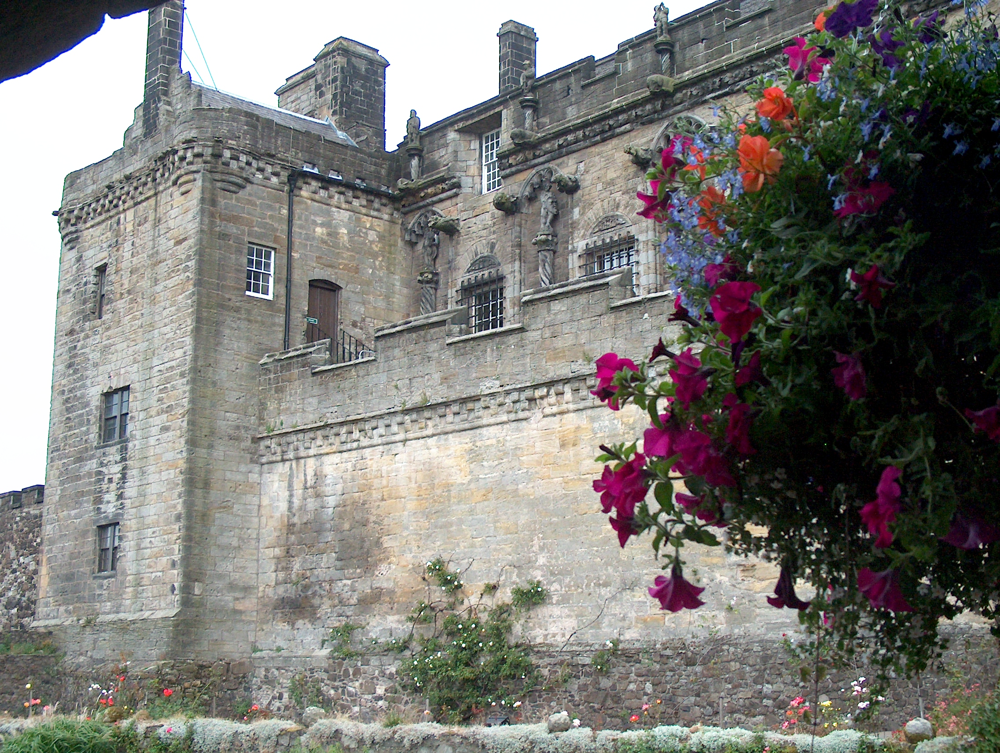

About Weekend Roamer
Travel plans with more purpose and fewer open tabs.
Weekend Roamer is for people who want a good trip, not a manic itinerary: practical location guides, clear planning notes and room to discover somewhere for themselves.

What we make
Guides that help you decide, then get out of the way.
There is no shortage of travel content. The useful kind tells you the shape of a place, what is realistic in the time you have and where to get reliable, live information before you leave.
Each Weekend Roamer guide starts with a simple premise: one destination, one sensible pace and one route through it. The details are there to make a trip easier — not to turn it into homework.
- Useful over exhaustive. A small number of good choices beats a long generic list.
- Official sources for changeable facts. Transport, tickets, seasonal access and safety details should always be rechecked.
- Original editorial judgement. A guide should explain why a place works, not just repeat what every other page says.
Editorial note
How Weekend Roamer stays useful
Travel details change. Before publishing new guides, verify opening times, ticket rules, local transport and any advice that may affect a journey. Link readers to the source whenever a detail is likely to change.
Never present affiliate links, gifted stays or paid partnerships as independent recommendations. If any future post earns a commission or is sponsored, label the relationship clearly and close to the recommendation.
This launch version contains no affiliate links, paid placements or sponsored posts.